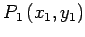
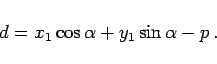
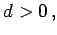
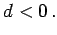

Inhalt Index DeskTop Bronstein

 Geometrie Vektoralgebra und analytische Geometrie Analytische Geometrie der Ebene Gerade
Geometrie Vektoralgebra und analytische Geometrie Analytische Geometrie der Ebene Gerade


Man erhält den Abstand d eines Punktes  von einer Geraden aus der HESSEschen Normalform durch Einsetzen der Koordinaten des gegebenen Punktes in die linke Seite von (3.321):
|  | (3.330) |
Wenn P1 und der Koordinatenursprung auf verschiedenen Seiten der Geraden liegen, ist  anderenfalls ist 